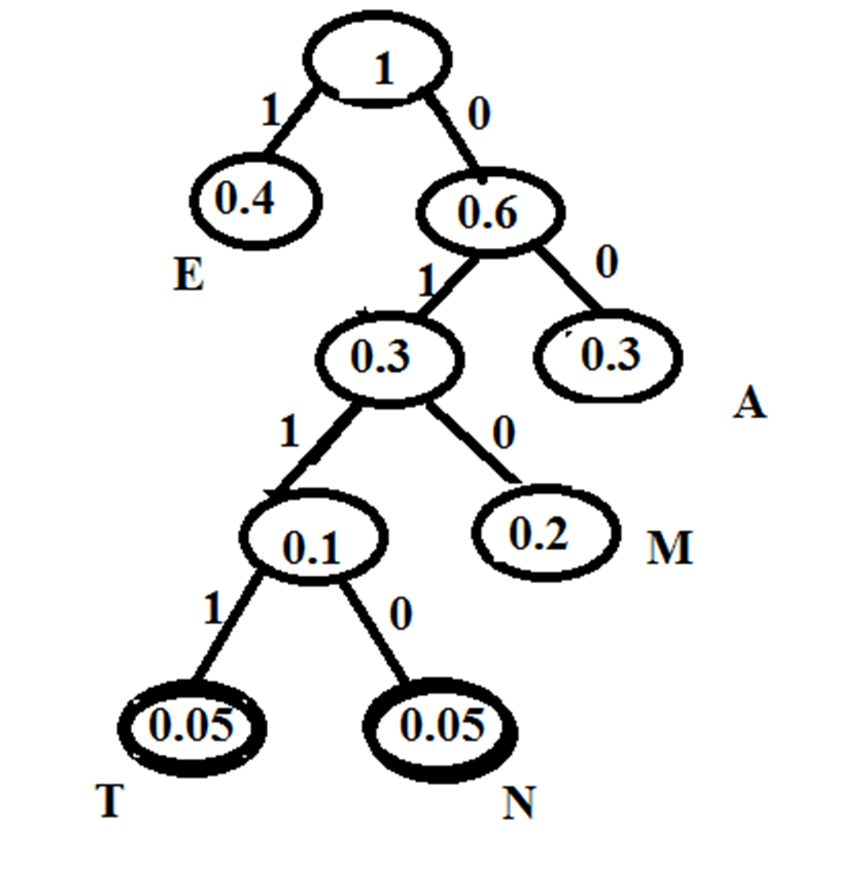
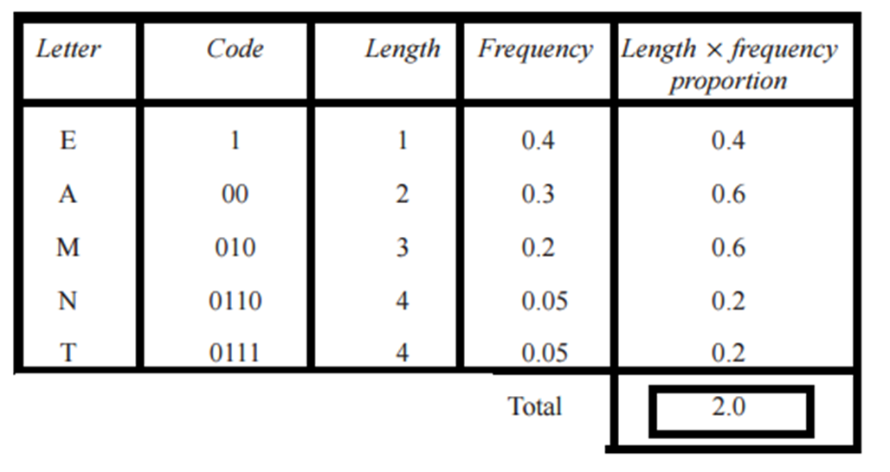
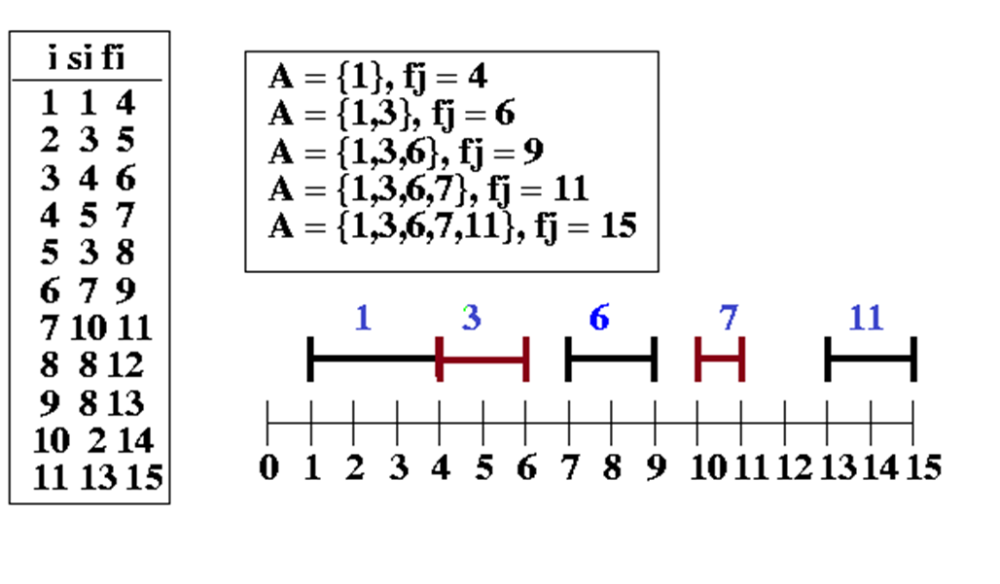

Divide and Conquer Algorithms
Greedy Design Technique
- Greedy algorithms uses the heuristic of making the locally optimal choice at each stage of problem solving, with the hope of finding a globally optimal.
- An optimization problem can be solved using following Greedy approach
- Greedy-choice property: A global optimum can be arrived at by selecting a local optimum.
- Optimal substructure: An optimal solution to the problem contains an optimal solution to subproblems.
Greedy Algoritms
- Single Source shortest path (Dijkstra's Algorithm)
- Minimum Spanning Tree (Kruskal's algorithm & Prim's algorithm)
- Huffman Coding (Optimal prefix code)
- Fractional knapsack problem
- Activity Selection Problem
Huffman Coding
- Storage space for files can be saved by compressing them where each symbol can be replaced by a unique binary string.
- Minimum Spanning Tree (Kruskal's algorithm & Prim's algorithm)
- Each code needs to be prefix free that is no codeword is a prefix of another code.
- The Huffman coding is a greedy method for obtaining an optimal prefix-free binary code.
Example: Find the average word length for the
following letters with the given frequency of
use of the letters.
E - 40%; A - 30%; M-20%; N-5%; T-5%
Solution:
Following huffman tree can be constructed using the given frequencies.


Activity-Selection (scheduling) problem
- S = {1, 2, .., n} proposed activities
- All want the same resource (classroom), used by one at a time
- Each activity i has start time si and finish time fi, si <= fi, [si, fi)
- Two activities i and j are compatible if they do not overlap (si >= fj or sj >= fi )
Problem: Select maximum-size set of compatible activities. Assume the input is sorted by f1<=f2<=…<=fn (O(n lgn)).
ActivitySelection(s, f)
1 n = length(s)
2 A = {1} ; Initialize A
3 j = 1
4 for i = 2 to n
5 if si >= fj ; Compatible
6 then A = A U {i}
7 j = i
8 return A

Dynamic Programming
Dynamic programming helps to solve a complex problem by breaking it down into a collection of simpler subproblems, solving each of those sub-problems just once, and storing their solutions. A dynamic programming algorithm will examine the previously solved sub problems and will combine their solutions to give the best solution for the given problem.
Dynamic Programming Algorithms
- Fibonacci sequence
- 0-1 knapsack problem
- Maximum sub array problem
- Longest Common Subsequence problem
- Matrix chain multiplication
- All pairs shortest path problem